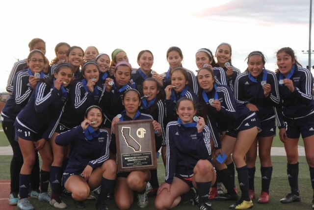
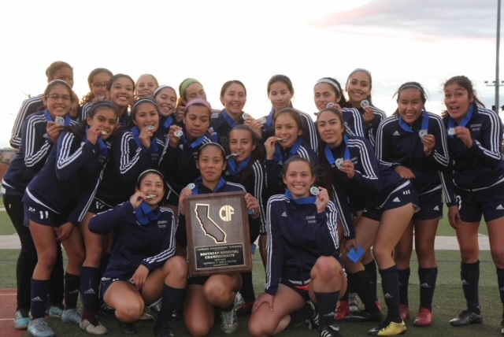

Bahia Zarate
Bahia Kenza Zarate is a sophomore at UC Riverside, majoring in Creative Writing. Though she grew in the San Gabriel Valley, she has been shaped by travels to more than 20 countries, which has given her a broad perspective of the world and cultural fluency. These are important skills on which she draws for her major and career goals. Story-telling is part of the culture of her family. And she draws upon her experiences abroad and living in a culturally diverse community to shape her fiction and non-fiction writing. Her educational goals have always included UCR because of its major in Creative Writing. The opportunity to participate in such a program has proven to be both challenging and rewarding. It has affirmed her decision to attend UCR. As part of her degree at UCR, Bahia will participate in the University of California Education Abroad Program. Her study will include coursework and an internship in Dublin, Ireland, and further study in fine arts in Wellington, New Zealand. Her educational goals include post-graduate work. She believes that the University of California programs and campuses are uniquely positioned to provide her with a range of experiences and opportunities that will maker her versatile as a writer in her future careers.
She has worked as a tutor for the past few years, helping at-risk children improve in school subjects such as English and Mathematics. This has required flexibility and opened her eyes to the socio-economic and cultural challenges that students face in education. She also works for the non-profit organization, Friends of La Laguna, whose mission is to preserve the historic concrete playgrounds made by Benjamin Dominguez. As a junior board member, Bahia traveled to the elementary schools in the district around that park and presented to fourth graders in hopes of spreading awareness about La Laguna. She helped to create educational presentations and to do outreach into the community. Additionally, she also helped organize community playdates, supervised information booths at festivals, and helped sell Friend’s of La Laguna merchandise. Bahia was an athlete in high school, where she played soccer and softball. There she was awarded Coach’s Award twice and won the CIF State Championship with her soccer team. On her teams, Bahia held leadership roles and has remained active as an alumnus by providing mentorship and coaching to younger players. Bahia is also a musician and has learned to play the upright bass and piano. As a member of her high school orchestra, Bahia was awarded Outstanding Musician her junior year.
In her free time, Bahia loves to read horror novels and enjoys watching international films and series. She is an avid amusement park goer and is never deterred from thrill-seeking roller coasters. She is a certified scuba diver and hopes to take advantage of this skill while studying abroad. Additionally, she enjoys hiking and exploring local trails. She is more than determined to make the hike to the legendary UC Riverside “C”, although she hopes to find a hiking companion who is up to the challenge.
Experience
Creative Writing Club Founder
• Peer review story ideas
• Create an environment where people can focus on writing their stories
Junior Outreach Member
• Presented to classes to spread awareness about La Laugna
• Went to events to sell Friends of La Laguna merchandise
• Peer review stories written about the park
• Give tours around the park to educate people
Education
UC Riverside
Portfolio


.jpg)

